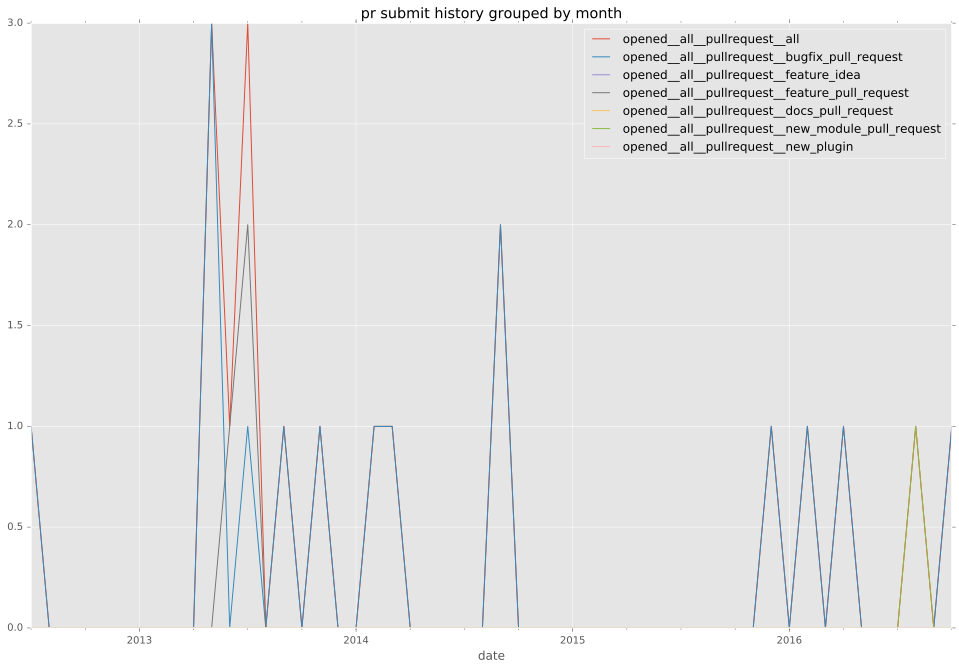
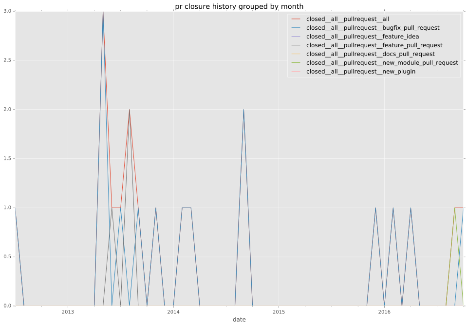
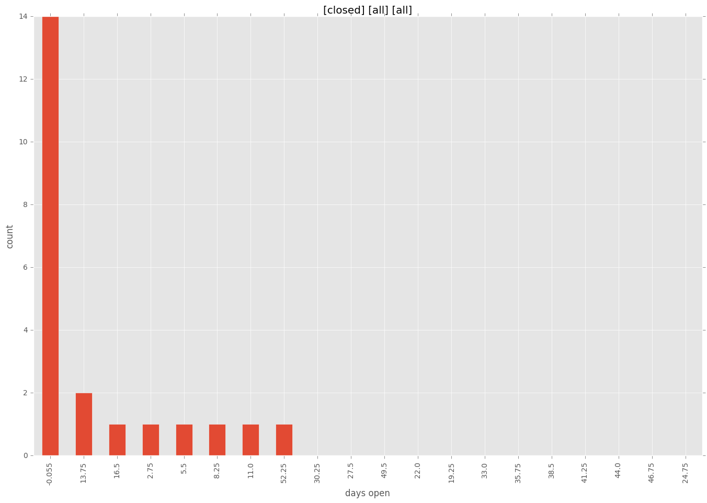

authors
- bcoca
maintainers
- bcoca
contributors
- mpdehaan : 4 commits
- neuroid : 2 commits
- mscherer : 3 commits
- bcoca : 41 commits
- jpmens : 3 commits
- jctanner : 2 commits
- quoing : 1 commits
- gregdek : 1 commits
total issue counts
feature pull request: 4
docs report: 1
pullrequest: 18
bugfix pull request: 14
feature idea: 1
issue: 4
bug report: 2
issue history
pullrequest history


days open by issue type
bugfix pull request
count: 20
std: 5.35551855074
min: 0
max: 16
median: 0.0
mean: 2.55
all
count: 31
std: 14.0697188759
min: 0
max: 55
median: 0.0
mean: 7.09677419355
pullrequest
count: 0
std: nan
min: nan
max: nan
median: nan
mean: nan
docs report
count: 1
std: nan
min: 0
max: 0
median: 0.0
mean: 0.0
feature pull request
count: 7
std: 24.2064532915
min: 0
max: 55
median: 9.0
mean: 20.4285714286
feature idea
count: 1
std: nan
min: 0
max: 0
median: 0.0
mean: 0.0
issue
count: 0
std: nan
min: nan
max: nan
median: nan
mean: nan
bug report
count: 2
std: 7.07106781187
min: 8
max: 18
median: 13.0
mean: 13.0
closures grouped by total days open
